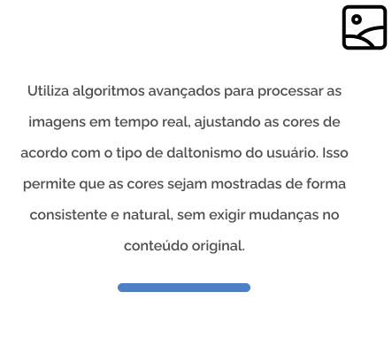
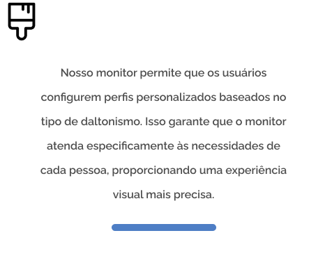
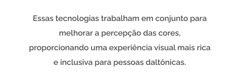
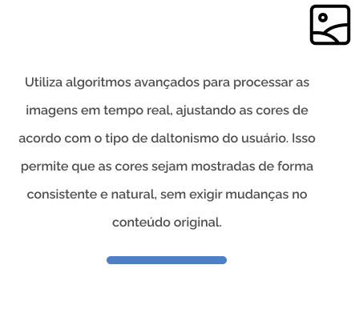
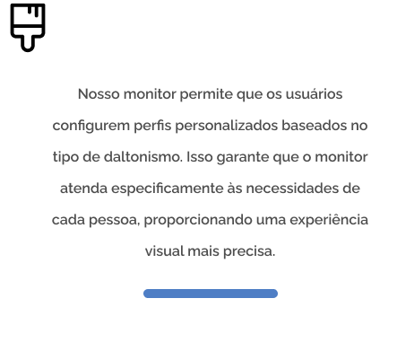
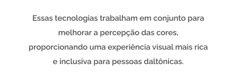

Nosso monitor foi criado para pessoas com daltonismo,
ajustando as cores para que possam ver o espectro
completo. Com tecnologia avançada, ele oferece uma
experiência visual inclusiva e precisa, ideal para trabalho,
estudo e lazer, permitindo que as cores sejam apreciadas
de forma natural e acessível a todos.
 




